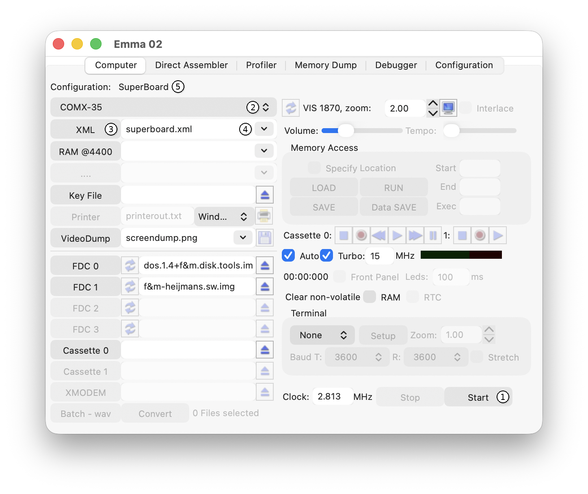

The Computer tab is used to configure the emulated system and associated files.
Some controls may be disabled depending on the selected computer type or configuration.
The main controls of the Computer tab are shown in the screenshot below. The numbered markers in the screenshot correspond to the descriptions in this section.

To start a computer emulation, press Start (1). After startup, the Start button changes to Reset, and the Stop button becomes available. To stop a running computer, press Stop or close the main emulation window.
To select an XML configuration file, first choose the desired computer (2), and then select the XML file (4).
When an XML file is selected, a short description of the configuration is shown in the Configuration field (5). Based on the contents of the XML file, parts of the user interface are enabled or disabled automatically. Start the selected emulation by pressing Start (1).
The computer list (2) is generated from the directory structure in the XML directory within the data directory (see the Directory and File Structure section). A different XML directory can be selected using the XML button (3).
The currently defined computer list is shown when using the computer selector (2):
If a new directory is created within the XML directory, it will appear as a computer at the next startup or after reselecting the XML directory using the XML button (3).
If defined, the extended computer name specified in the XML file replaces the computer directory name using the <system><name> tag. It is therefore recommended to use the same name tag in all XML files within a single computer directory.
Each computer may include one or more XML files, depending on the number of available configurations.
See the XML Code Syntax section.